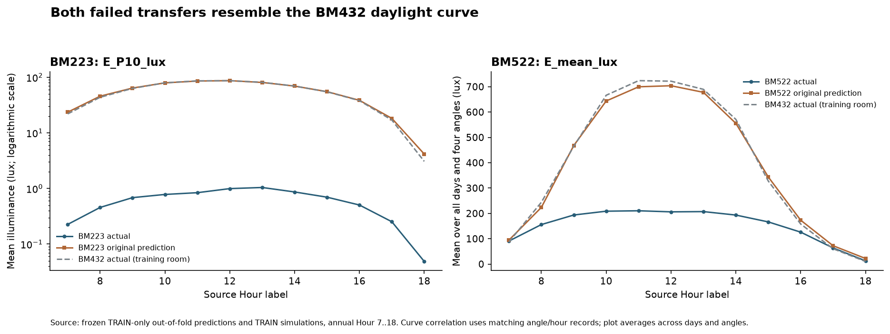
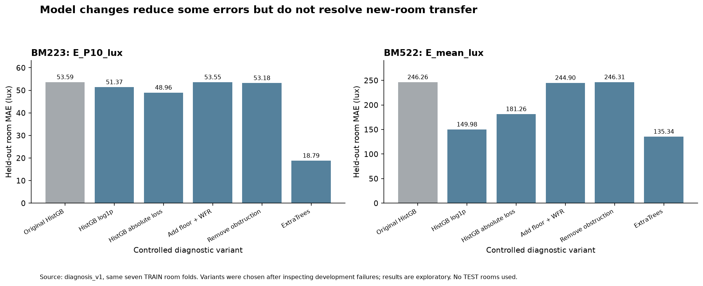
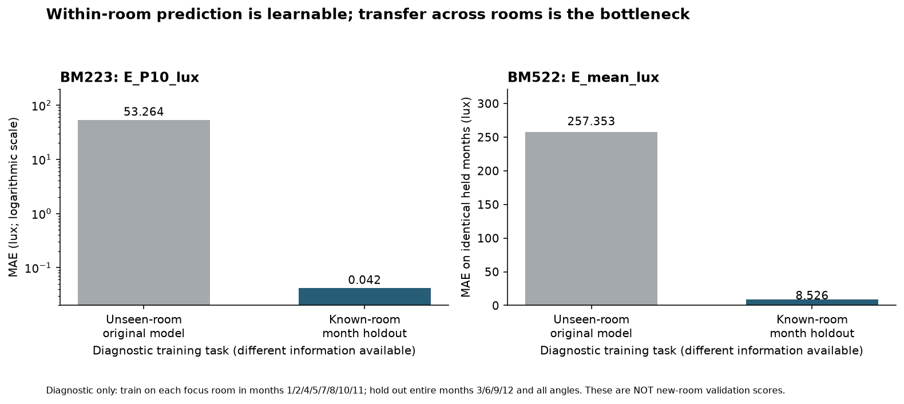

主要证据指向：训练房间覆盖不足、现有 BIM 特征不能稳定表达采光空间分布，以及树模型利用面积等特征区分少数房间。模型目标和算法也会影响误差，但简单换模型尚未解决问题。
范围：仅 7 个 TRAIN 房间。新增 70 次留一房间拟合及 2 次已知房间整月留出诊断，未对 3 个 TEST 房间预测、评分或统计目标分布。原始数据、初版模型与结果均保留。
真实 P10 平均 0.616 lux，原模型预测平均 54.208 lux，每条记录都高估，MAE 为 53.592 lux。真实值标准差只有 0.616 lux，因此巨大负 R² 会被小方差进一步放大；但绝对误差也远超真实尺度，不能仅归因于 R² 的计算方式。作为量级参照，恒为 0 的输出在该房间上的 MAE 为 0.616 lux，这不是给所有房间预测 0 的建议。
覆盖问题已经直接确认：BM223 是 7 个训练房间中唯一的模型 +X 朝向。留出它后，剩余 6 个房间的 Orientation_X_model 全为 0。将冻结模型输入的 X 朝向从 1 改为 0 时，全部预测不变。这个验证折没有学到 +X 房间响应的样本。
模型表现出面积分组的捷径：把诊断输入中的面积从 6.659 改为 7.763 m²，其他输入保持不变，P10 预测平均改变约 54.08 lux。该操作只是在探查模型，不能通过修改真实面积来修复预测。原预测与 BM432 同角度、同时间的真实 P10 相关系数为 0.9945；BM432 的 P10 均值是 53.683 lux。
真实均值 152.811 lux，预测均值 389.718 lux；85.4% 的记录高估，MAE 为 246.265 lux。剩余 6 个训练房间上的拟合 MAE 为 15.709 lux，说明模型能拟合已有房间，却未成功迁移。
BM522 与 BM432 面积接近、玻璃面积相同，但模型朝向分别为 +Y 与 −Y。模型给 BM522 的预测曲线与 BM432 实际平均照度曲线相关系数为 0.9921。将面积从 6.443 改为 6.595 m² 时，预测全部不变；再改为 6.659 m²，预测平均绝对变化约 282.61 lux。这说明模型对少量房间的面积阈值依赖很强，方向和遮挡并未形成足够稳健的迁移规律。

目前未发现 CSV 层面的直接错误：无缺失或重复工况时间记录；比例乘以 Sensor_Count 与整数传感器数一致；平均照度、P10 和阈值比例之间满足所检查的非负照度约束；每个房间的 BIM 和传感器数量在各工况间固定。
但还不能证明源数据完全正确。我们没有原始逐点传感器结果、网格与导出脚本，无法重算 P10 或确认传感器属于正确房间。BM223、BM432、BM522 的传感器数量分别为 74、40、66，虽然面积都约 6–7 m²，网格范围、分辨率或形状可能不同；数量不同本身并不证明错误。P10 的空间分布高度依赖房间深度、窗户位置、工作面及网格范围，这些没有被当前特征充分记录。
优先抽取同一天、同一小时、同一角度的三房间原始逐点 lux，检查房间 ID、网格坐标、工作面高度、采样间距、传感器是否越界或含室外点，并用相同的 numpy 线性百分位重算 P10；同时重算均值及 F_300、F_UDI。保留当前低 P10 记录，不能凭数值小就删除或改单位。
五个方案均保持相同的 7 个留一房间折，分别预测 P10 和平均照度。只改目标变换、损失、既有 BIM 特征或算法中的一类设置；没有利用 TEST 做选择。

| variant | room | target | mae | rmse | r2 |
|---|---|---|---|---|---|
| Original_HistGB_B | BM223 | E_P10_lux | 53.592 | 76.407 | -15386.050 |
| Original_HistGB_B | BM522 | E_mean_lux | 246.265 | 458.145 | -18.099 |
| HistGB_log1p | BM223 | E_P10_lux | 51.367 | 71.554 | -13493.522 |
| HistGB_log1p | BM522 | E_mean_lux | 149.983 | 238.899 | -4.193 |
| HistGB_absolute | BM223 | E_P10_lux | 48.956 | 63.980 | -10788.016 |
| HistGB_absolute | BM522 | E_mean_lux | 181.261 | 322.722 | -8.477 |
| HistGB_add_floor_WFR | BM223 | E_P10_lux | 53.553 | 76.348 | -15362.318 |
| HistGB_add_floor_WFR | BM522 | E_mean_lux | 244.904 | 458.336 | -18.115 |
| HistGB_without_obstruction | BM223 | E_P10_lux | 53.185 | 76.799 | -15544.232 |
| HistGB_without_obstruction | BM522 | E_mean_lux | 246.315 | 459.018 | -18.172 |
| ExtraTrees_B | BM223 | E_P10_lux | 18.787 | 23.621 | -1469.591 |
| ExtraTrees_B | BM522 | E_mean_lux | 135.341 | 234.580 | -4.007 |
ExtraTrees 将 BM223 P10 的 MAE 降到 18.787 lux，但仍远大于真实均值，且在 BM441、BM608、LM608、LM703 等低 P10 房间的误差变大，不能只根据总体均值下降就全局替换。加楼层和窗地比对两个问题基本没有帮助；移除遮挡使平均照度的 7 房间平均 MAE 恶化约 26%，不应把有用遮挡信息一概删掉。
log1p 目标变换将 BM522 平均照度 MAE 从 246.265 降到 149.983 lux；七房间平均 MAE 从 109.490 降到 95.921 lux，下降约 12.4%。这是可继续研究的候选，但该房间 R² 仍为 −4.19，且部分其他房间变差。逆变换也不保证无偏地估计原尺度条件均值。
对两个焦点房间各自用 8 个完整月份训练，留出 3/6/9/12 月及其全部角度；与原跨房间模型在完全相同的留出时刻比较：BM223 P10 的 MAE 从 53.264 变为 0.042 lux，BM522 平均照度从 257.353 变为 8.526 lux，R² 均约 0.98。
这是不同任务的诊断，不是新房间泛化成绩。它使用了目标房间其他月份的模拟标签，只表明当前模型能学习同一房间随时间和天气变化的关系，不能据此宣称对未模拟房间已经准确，也不能证明原始网格或 EPW 对齐正确。

| Room_ID | Room_Area_m2 | Orientation_X_model | Orientation_Y_model | Solar_Obstruction_Ratio | Sensor_Count | E_P10_lux__mean | E_mean_lux__mean |
|---|---|---|---|---|---|---|---|
| BM223 | 6.659 | 1.000 | -0.000 | 0.694 | 74.000 | 0.616 | 132.149 |
| BM432 | 6.595 | 0.000 | -1.000 | 0.266 | 40.000 | 53.683 | 393.682 |
| BM441 | 7.783 | 0.000 | -1.000 | 0.776 | 46.000 | 0.038 | 45.038 |
| BM522 | 6.443 | 0.000 | 1.000 | 0.308 | 66.000 | 68.127 | 152.811 |
| BM608 | 7.763 | -0.000 | 1.000 | 0.796 | 116.000 | 0.184 | 30.771 |
| LM608 | 18.057 | 0.000 | -1.000 | 0.387 | 138.000 | 0.077 | 106.749 |
| LM703 | 18.054 | 0.000 | 1.000 | 0.433 | 149.000 | 0.304 | 63.110 |
| variant | target | mae_mean | rmse_mean | r2_median | r2_min | rooms | mae_reduction_pct |
|---|---|---|---|---|---|---|---|
| ExtraTrees_B | E_P10_lux | 15.780 | 22.747 | -1114.585 | -26213.317 | 7 | 19.701 |
| ExtraTrees_B | E_mean_lux | 108.114 | 190.605 | -1.163 | -4.007 | 7 | 1.256 |
| HistGB_absolute | E_P10_lux | 18.242 | 25.502 | -0.864 | -10788.016 | 7 | 7.172 |
| HistGB_absolute | E_mean_lux | 108.923 | 183.805 | 0.095 | -8.477 | 7 | 0.517 |
| HistGB_add_floor_WFR | E_P10_lux | 19.637 | 28.486 | -0.859 | -15362.318 | 7 | 0.071 |
| HistGB_add_floor_WFR | E_mean_lux | 110.320 | 201.359 | 0.103 | -18.115 | 7 | -0.758 |
| HistGB_log1p | E_P10_lux | 19.251 | 27.540 | -0.872 | -13493.522 | 7 | 2.038 |
| HistGB_log1p | E_mean_lux | 95.921 | 168.184 | -0.008 | -4.193 | 7 | 12.393 |
| HistGB_without_obstruction | E_P10_lux | 19.576 | 28.529 | -0.865 | -15544.232 | 7 | 0.383 |
| HistGB_without_obstruction | E_mean_lux | 137.963 | 240.119 | -0.421 | -18.172 | 7 | -26.005 |
| Original_HistGB_B | E_P10_lux | 19.651 | 28.505 | -0.865 | -15386.050 | 7 | 0.000 |
| Original_HistGB_B | E_mean_lux | 109.490 | 200.647 | 0.093 | -18.099 | 7 | 0.000 |
数据来源：diagnosis_v1 的实际模拟输入、冻结模型、留出预测及控制实验。所有指标均在原 lux 单位评价。数据检查和全部 70 条新增 CV 指标、70 个新增 CV 模型及 2 个时间诊断模型的重载复核已通过。诊断方案是在看到开发失败后设计的，仍属于开发期探索；3 个 TEST 房间没有预测、评分或目标分布分析。